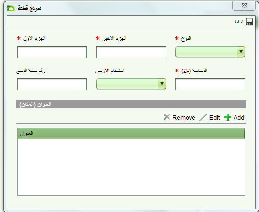
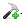
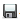

المطالبة بالحقوق
ابتداءا سجل المطالبة بحق جديد
لتسجيل المطالبة بالحقوق- التسجيل المنتظم او المطا لبة المعاكسة استخدم شاشة تفاصيل الطلب من قائمة الطلبات باختيار
البيانات التي يجب ادخالها :
- في صفحة" عام " ادخل تفاصيل الشخص صاحب المطالبة مثل اسم السخص عنوانه وتفاصيل الاتصال
- في صفحة الخدمات اضف خدمة تسجيل منتظم
- في صفحة الملكية ادخل رقم القطعة واسم القطعة الاول والاخير, الحي , واسنخدام الارض
- في صفحة الوثائق سجل جميع الوثائق المتعلقة بالمطالبة الموقعة والمكتملة بدون الحاجة الى ارفاق الصور الرقمية عن ذلك
- في صحة الرسوم قم باحتساب الرسوم وسجي رقم الفاتورة
- بعد ادخال جميع المعلومات احفظ الطلب . سوف يقوم بذلك بايداع الطلب , طباعة الوصل
اكمل تفاصيل المطالبة
لانهاء ادخال تفاصيل المطالبة سوف تحتاج الى الوصول الى طلب التسجيل المنتظم للملكية التي عليها النزاع. اختر الطلب سواء كان معينا ام غير معين ثم اضغط على زر التعديل
- افتح الطلب وتاكد من احتساب الرسوم
- اختر الطلب المتعلق بالتسجيل المنتظم وعينه لنفسك
- افتح الطلب وفي صفحة الوثائق قم باضافة الوثائق التي تدعم المطالبة والتي لم يتم اضافتها حين ايداع الطلب مع التاكد من ربطها بالوثائق الرقمية التي تدعمها
- افتح الطلب وفي صفحة الوثائق قم باضافة الوثائق التي تدعم المطالبة والتي لم يتم اضافتها حين ايداع الطلب مع التاكد من ربطها بالوثائق الرقمية التي تدعمها
اختر سجل الوثيقة ثم اضغط على
 icon
اضافة وثيقة رقمية للسجل
icon
اضافة وثيقة رقمية للسجل
- ابدأ خدمة المطالبة –التسجيل المنتظم
- سوف يتم فتح شاشة تفاصيل الملكية. تاكد من رقم الملكية مطابق للملكية في نموذج المطالبة. اذا كانت الملكية غير مطابقة قم باغلاق الخجمة دون حفظ . صحح بيانات الملكية من شاشة تفاصيل الطلب
- اترك حقل المساحة فارغا لانه سوف يتم تعبئته من تفاصيل نقاط المسح التي تم تحميلها مسبقا
- في صفحة القطع اضغط
 " اضافة قطعة " لفتح شاشة اضافة قطعة
" اضافة قطعة " لفتح شاشة اضافة قطعة

- تاكد من حقل القطعة يتطابق مع الملكية الموجود في النظام . اذا كان مطابقا اضغط عل قائمة النتائج واختر القطعة. اترك النموذج فارغا اذا لم يكن مطابقا ثم اعد الكرة عندما يتم تحميل نقاط المسح
- في صفحة اصحاب الحقوق\القيود انشئ الحق الاساسي للملكية واختر نوع الحق الاساسي من قائمة انواع الحقوق  انشاء
- ادخل تفاصيل الحق الاساسي (مثال مطالب للحق الاساسي) في صفحة اصحاب الحقوق , الحصص وقطعة جديدة) . تاكد من اختيار "حق اساس" وادخل في الملاحظات " الملكية انشئت من التسجيل المنتظم ) واترك تاريخ التسجيل فارغا . كذلك ادخل وثيقة الحق الاساسى والمطالبة
- كذلك ادخل جميع الحقوق والقيود الاخرى ان وجدت مثل النقل , حقوق الارتفاق ) او تلك الصادرة بحكم قضائي من خلال اضافة خدمة لكل نوع حق او قيد
- احفظ  التغييرات على الملكية و
 اكمل خدمة التسجيل المنتظم
اكمل خدمة التسجيل المنتظم
انظر ايضا